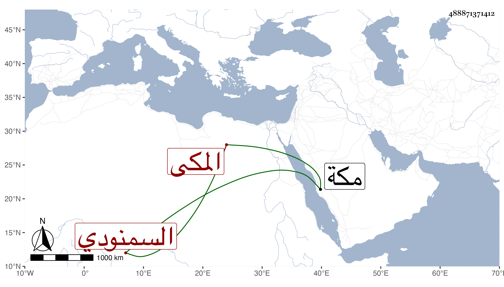

0902Sakhawi.DawLamic.ITO20230111-ara1.EIS1600.488871371412
Biography ID: 488871371412
22
محمد بن محمد بن محمد الجمال بن التاج السمنودي الأصل المكى ويعرف بابن تاج الدين. سمع من ابن صديق جزء أبى الجهم وأجاز له في سنة خمس العراقي والهيثمي والزين المراغي وعائشة ابنة ابن عبد الهادي وآخرون. مات بمكة في صفر سنة سبع وأربعين. أرخه ابن فهد.
